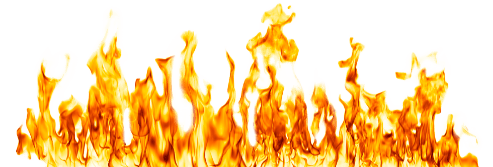

ELY — Two fires burning in the Superior National Forest merged, and a new fire is burning in the Boundary Waters after crossing the Canadian border. Additional evacuations were needed along the Echo Trail between Ely and Crane Lake Wednesday morning, July 15, because of the Sioux Fire. It has merged with the Wolfpack Fire and is burning inside and outside of the Boundary Waters Canoe Area Wilderness. The fire was estimated at a combined 6,922 acres as of midday Wednesday, and firefighters are working to protect structures. The Little Knife Fire crossed into the U.S. from Canada late Tuesday and has spread to about 10 miles southeast of the end of the Gunflint Trail as of midday Wednesday, burning an estimated 6,000 acres on the U.S. side and 30,000 acres in all. The three largest fires — two in the Boundary Waters and one northeast of Ely — also grew. As of midday Wednesday: Thumb Fire: 14,500 acres, an increase of about 2,200 acres since midday Tuesday. About 6 miles south of Gakijiwanong Anishnaabe Nation in Canada. Active fire behavior and has crossed into Canada. Aircraft suppression on U.S. side. Bear Trap Fire: 13,500 acres, an increase of about 600 acres. South of Lac La Croix, 20 miles north of Ely. Extreme fire behavior and has crossed into Canada. Camp Fire: 2,886 acres, an increase of about 900 acres. About 5 miles north of Winton. Extreme fire behavior, and firefighters are working to protect structures. The latest fire information can be found on InciWeb, including estimated size, fire behavior and firefighting activity. Roughly 400 firefighters are battling a total of 15 active wildfires, with another 100 people working in support roles. The number of firefighters is expected to increase as more resources arrive. Fires in the western U.S. are stressing national resources, but Northern Minnesota has reached No. 3 on the priority list. Nick Petrack, the fire management officer for the Superior and Chippewa forest, said the fires and the potential community impacts are growing. "We constantly are communicating the needs up, and we've done a pretty good job filling the orders that we need to to help manage these fires," Petrack said. " ... Once we order resources, it takes time from a federal side of it; they may be coming from Alaska. They may be coming from New York or Florida." Officials stressed in a news conference Wednesday public and firefighter safety is the number one priority. “Things are very dynamic, so I appreciate patience as we try to get out the latest intel," Petrack said. "Things change very rapidly. My No. 1 priority fire at 4 p.m. may switch at 5 p.m. So we have to pivot and adjust.” While weather conditions may ease some, the broader firefight is not ending anytime soon. “I tell my neighbors down in the southeast part of the country, it takes rain with a name to put out a big fire," said incident meteorologist Phil Manuel. “Odds are, these fires will be here 'til it snows. So there will be some fire on the ground, in some form or fashion, along with smoke, until it snows.” In some places, the fires are burning 2-3 feet deep into the duff on the forest floor. "So your needle litter, your grasses, that's what's carrying the fire for the most part," Petrack said. "But it's very difficult to put out those fuels once it burns really deep. It takes a lot of people power." Rangers continue to canoe through the Boundary Waters to tell campers to evacuate. Forest Supervisor Tom Hall estimated they’ve reached about 90% of people. "We are still looking to ensure we've done our due diligence," he said. Hall said the Boundary Waters closure is being evaluated on a daily basis, with permits being canceled four days out. "This is a complex situation. As we're getting resources in, as the weather changes, as the fires potentially slow down, those are opportunities for us to potentially reduce those closures," Hall said. "Until that's in place, it is too unsafe for our firefighters and the public to be out there." Officials also stressed the importance of following evacuation orders. Property owners can choose to stay after they are told to leave. But there’s no guarantee firefighters will make it back to you if the worst happens. “That puts a lot of stress on our firefighters, knowing that someone may not have left," Petrack said. "That’s not something that we take very easily.” The incident managers continue to share daily updates on fire activity. Follow local law enforcement for the latest safety information. The worst wildfire smoke Minnesota has ever experienced has also set in across the Northland. Air quality is not expected to significantly improve for at least a couple of days. Officials also say donations are not needed for firefighters or evacuees at this time. Very few people have gone to the evacuation center in Babbitt for assistance, and firefighters' food and shelter needs are being taken care of by the U.S. Forest Service and others, St. Louis County stated on social media. "We know people want to help, and we really appreciate that. It's what makes our region such an awesome place. But the reality is, food and clothing donations often go to waste in disasters.
